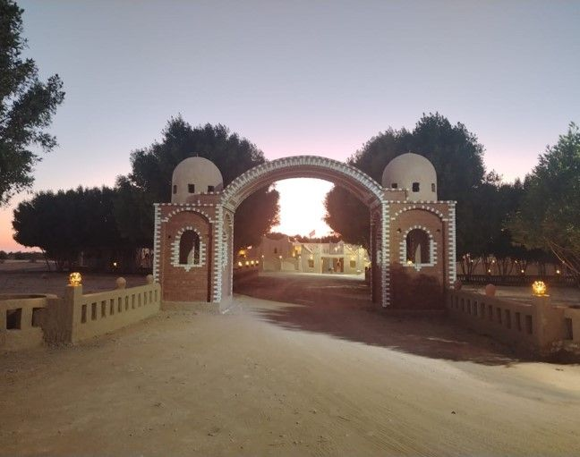

Día 01
Llegada a El Cairo
Recepción en el aeropuerto y traslado al hotel. Noche en El Cairo.
El CairoHotel

Una travesía de 11 días desde El Cairo por Bahariya, Farafra y Fayoum, acampando bajo las estrellas: el Desierto Blanco, el Gran Mar de Arena, la cueva de Djara, Wadi Hitan y los lagos de Fayoum.
El orden de los días puede cambiar con el tiempo, la arena y el grupo. La esencia de la ruta, no.
Reservar esta ruta
Recepción en el aeropuerto y traslado al hotel. Noche en El Cairo.

Pirámides de Guiza y necrópolis de Saqqara, el nuevo Gran Museo Egipcio y comida. Tarde libre y paseo por la ciudad. Noche en El Cairo.

Microbús hacia el sur hasta el oasis de Bahariya, comida y cambio a los 4×4 en El Heiz. Montaña de Cristal y entrada al Desierto Blanco por el paso de Agabat. Tiendas para dos personas.

Amanecer, las dunas de Agabat, baño y té en Bir Khadra y las formaciones rocosas. Comida en la parte occidental; acampada en un valle al borde del Gran Mar de Arena.
Hacia el macizo de Abu Said, comida en la meseta sobre Abu Monkar y noche en Sand Gate Camp.

Paseo por el oasis, comida en Bir Mahmoud I y baño en la fuente termal. Noche en Sand Gate Camp.

Ruta hasta las montañas de Shaw Shaw, comida y visita a la cueva de Djara. Acampada en las dunas de Muharriq.

Un día entero en 4×4 cruzando las dunas de Abu Muharriq de sur a norte. Acampada cerca de Darb el-Rayan.

Pistas hasta la carretera de Fayoum y Wadi Hitan, el Valle de las Ballenas, con su pequeño museo y sus fósiles. Comida y continuación a Wadi Rayan; noche de hotel en Fayoum.

Visita matinal a Wadi Rayan y comida junto al lago; después, microbús hasta el hotel en El Cairo.

Desayuno y traslado al aeropuerto de El Cairo.
Una idea clara antes de pedir presupuesto. El precio depende del tamaño del grupo y de la temporada.
Los servicios definitivos se confirman en tu presupuesto personalizado.
Qué esperar sobre el terreno.
De octubre a abril, con días templados y noches frescas. Pregúntanos por otros meses.
Viajeros con buena salud general. No hace falta experiencia técnica: jornadas largas en 4×4 y acampadas sencillas.
Tiendas para dos, esterillas y cocina de campaña. Trae una capa de abrigo para dormir.
GPS y teléfono satélite en cada vehículo; conductores y guías beduinos con experiencia.
Amaneceres y atardeceres en las dunas, cielos estrellados. Trae baterías de repuesto y una funda contra el polvo.
Mándanos tus fechas y el número de viajeros y te respondemos con un presupuesto personalizado.
Cuéntanos tus fechas y el número de viajeros. Te confirmamos disponibilidad y te enviamos el presupuesto personalmente.
Atención para reservas de 08:00 a 20:00 (hora de Egipto). ¿Prefieres un formulario? Ir a contacto
O sigue hacia el sur: los valles de Dabadib, las fortalezas romanas, el templo de Hibis y El-Bagawat.